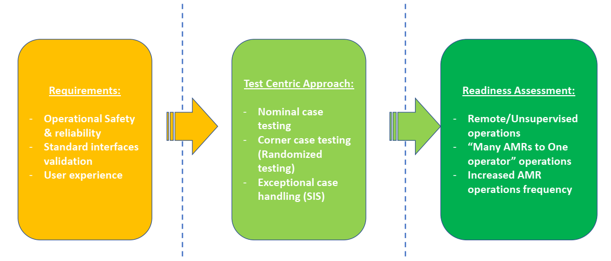
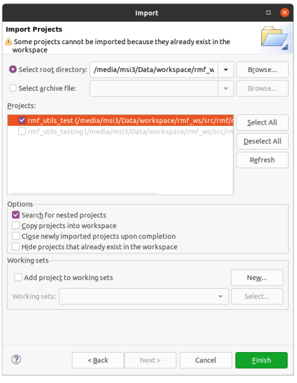
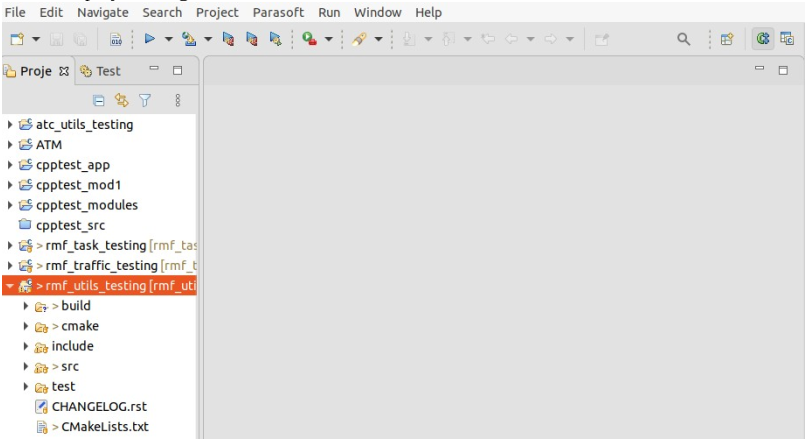
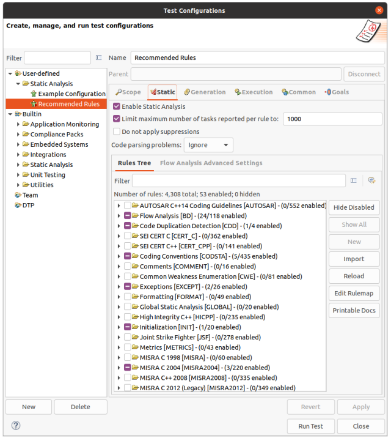

RMF Systems Engineering Handbook
1st July 2022
What is the RMF@TRL project about?
In the course of building the RMF, the team observed many questions being asked (by Government agencies, end users, AMR vendors and developers), about RMF's
- Safety & reliability
- Operational concerns
- Policy and regulations.
To address these concerns, Singapore's S&TPPO and SNDGG have put together a pilot project centered on National Library Board's premises at Tampines Regional
The project team (in collaboration with OSRF Singapore) will be taking a test centric approach in our development & deployment of RMF at TRL, to collect real world data to evaluate these issues.
Motivations for RMF Systems Engineering Handbook
At higher levels of consideration (from a systems engineering standpoint), we note the following trends for ROS usage:
- ROS1 has been massively successful as an open source effort amongst the academic community
- Promoting reuse of robotics developments across students, researchers and developers
- High rates of adoption across robotics community, particularly in promoting the ROS standard message libraries for interoperability
- ROS2 has been steadily gaining traction with automotive components suppliers ie: Apex.AI
- Noted ROS1 has reached end of life (noetic)
- ROS2 is supposed to champion both open source efforts and commercially ready packages (ie: ROS2 RMWs)
Key outcome we want to arrive at, is a operational (safe, functional and reliable) RMF system. Thus to bridge the divide from ROS1/ROS2 towards an operational outcome, is not just "software" issues.
There are orthogonal considerations, (ie: systems engineering concerns), that need to be addressed:
- Risk assessments and hazards analysis
- Quality assurance & quality control issues (ie: Patform hardware and software, operational safety)
- Platform safety and operational standards
- Design documentations and traceability
- Qualifications plans and system test/comissioning plans
We note also, that where previously AMRs were installed and comissioned "end to end" by a single Robotics Systems Integrator, RMF is designed to decouple the "end to end" responsibility, into the following roles:
- Building management systems
- Core logic (govening traffic control)
- AMR fleets ( > 1 brand)
This allows for multi-fleet interoperability
"The camel, was a horse, but designed by a committee..."
- Sir Alec Issigonis, designer of the Morris Mini, 1959
So it turns out, these are rather contentious issues, where answers are needed. After several months of study, the project team has outlined an approach that we think strikes the best balance of the following factors:
- Cost
- Complexity
- Performance
- Interoperability
Insert diagram of "Platform -> Qualifications -> Operations" here
For this to work however, we will be sharing both our approach (in this guide book) and the data that we have collected, for peer review process. Thus we need the
Do email us your questions and observations, that we can refine this live systems engineering process, so that we can create a new kind of cyber-physical network where robots can roam freely across interlinked premises!
Thanks and best regards,
Chong Teng Sheng
Project Sponsor, S&TPPO
chong_teng_sheng@pmo.gov.sg
Project Outline

Overall Architecture
Current Status
-
Contractual matters
- ITT documents published, awaiting evaluation (Mar 2022)
- Direct contract awarded to Fujitec cargo lift (Mar +3mths)
- AWS GCC cloud service setup
-
Site Assessments
- Cargo lift assessment completed – lift gap considerations, integration with Fujitec
- Door assessments completed – Fire safety, security company (Bosch), 3 possible approaches
-
Design Efforts / Documentations
- RMF Safety Instrumented System (SIS)
-
Current Developmental efforts
- RMF hosted on AWS GCC; integrated with Caato
- TRL levels 2-6 physically mapped, simulation and standalone scenarios done
- Caato 2.0 built, I2R navigation stack installed and working
- Network wiring arrangements (by NLB-TRL) underway
-
Staging of Component Purchases
- 1x Xnergy briefcase stand, 1set Phoenix Tx Rx Charger
- 1x Dormakaba automatic door actuators
- Parasoft Software QA license purchased
- Beckhoff Programable Logic Controllers (PLC) for Lift
- Decada Edge (Dell Edge) device purchase
Virtual TRL (ROS-Gazebo)

Our partners and contributors


Project Sponsor & Executing Agency
Mr Chong Teng Sheng - S&TPPO
Project Sponsor
chong_teng_sheng@pmo.gov.sg
Mr Timothy-Joe Tan - Govtech
Project Lead
timothy_tan@tech.gov.sg
Mr Abilash Sivalingam
abilash_sivalingam@tech.gov.sg
Mr Selvavignesh Balasubramanian
balasubramanian_selvavignesh@tech.gov.sg
RMF Overall Systems Integrator & Building Management Systems Integrator
Mr Lim Joo Siang - PM, Hope Technik
Overall Systems Integrator Lead & RMF Building Management Systems
limjoosiang@hopetechnik.com
RMF Core & Fleet Systems Integrator
Dr Ho Chin Keong - CTO, Senserbot
RMF Core Integrator Lead
ChinKeong@senserbot.com
Mr Matt Festo - PM, OSRF Singapore
matthew@openrobotics.org
Dr Michael Grey - Lead Developer, OSRF Singapore
RMF Scheduler Development Lead
grey@openrobotics.org
Universal Wireless Charger Systems Integrator
Mr Terrenlzze Wong - Xnergy Wireless
Wireless Charger Lead
twongms@xnergytech.com
Design Efforts
Design Efforts / Document tree
- RMF BMS Systems Integrator (HT)
- Lift acceptance test plan - from OEM
- Lift PLC + lift acceptance test plan (include fire safety, PLC-UPS design), ICD
- Lift PLC to Edge Computer test plan and IRS
- Door PLC + Door acceptance test plan (include fire safety, PLC-UPS design)
- Door PLC to Edge Computer test plan and IRS
- Wireless Charger standardized docking test plan and IRS
- Overall RMF integrator (HT + Govtech)
- Hazards and Risk analysis document, Risk Management Plan
- Platform Safety
- Operational Safety (ie: Fire safety)
- Building Wiring ICD
- Network HDD and ICD
- Overall SSS, Systems design document
- Nominal case test plan (AMR vendors, basic 4 scenarios)
- Extended test plan (4 scenarios + emergency scenarios, Monte Carlo testing)
- Testing and commissioning plan
- With ROS-Gazebo software in the loop (SwIL), SwTP for verification and validation
- On Site Acceptance Test (OSAT)
- Hazards and Risk analysis document, Risk Management Plan
- RMF Core integrator (OSRC + Senserbot)
-RMF core cloud deployment SSS, Systems Design Document
- RMF to BMS “cloud to cloud” test plan and IRS
- Cybersecurity Risk Assessment (IM8, AIAS) & development plan
- Software Quality (ie: Parasoft C++) where applicable
- Aurora-Caato developer (Senserbot + I2R + Govtech)
- RMF Nominal + I2R integration requirements
- AMR Vendors (Lionsbot? Gaussian..?)
- RMF Nominal case integration requirements (to be discussed)

Design Efforts / Documentation Goals:
- Identify updated type "C" requirements (ie: complimentary to ISO-
13482 as an operational standard) covering indoor buildings and
RMF-like system
- *Complimentary to I2R efforts to update ISO/TC299, ISO/CD 18646-2

- Update to IMDA AMR guidelines (ie: Govt Playbook)
Roles & Responsibilities

Approach to Development
Mandatory Developments
Optional Developments
Rationale
Identified Hazards

Terms of Reference
- A disturbance/error is an unknown and uncontrolled input acting on a system.
- A fault is an unpermitted deviation of at least one characteristic property or parameter of the system from the acceptable/usual/standard operating conditions.
- A failure is a permanent interruption of a system’s ability to perform a required function under specified operating conditions.
- Traditional control systems are designed to return the system to normal operations in the presence of disturbances but not in the presence of faults or failures.
- Fault-tolerant control (FTC) systems refer to control systems that have been designed to explicitly account for some class of specified faults in the closed-loop system. FTC systems must act in the time between a fault and a system failure.
The Nature of Accidents

Risk Assessment
Many forms of Functional Safety (IEC 61508)

Approach to Risk Assessment & Hazards Analysis
- Classifications (Mix of IEC 62304 and IEC 61508 SIL definitions):
- Class A: No injury or damage to health is possible.
- Class B: Injury is possible, but not serious.
- Class C: Death or serious injury is possible.

Approach to Software Systems Safety (ISO 62304)

Difference in Class
Class B

VS Class C/ Lvl A/ SIL 4

Platform standards
Overview of platform standards

Overview of operational standards

AMR Specific Platform Standards


Platform standards
Overview of platform standards
Overview of operational standards
AMR Specific Platform Standards
Risk Assessment
Many forms of Functional Safety (IEC 61508)

Approach to Risk Assessment & Hazards Analysis
- Classifications (Mix of IEC 62304 and IEC 61508 SIL definitions):
- Class A: No injury or damage to health is possible.
- Class B: Injury is possible, but not serious.
- Class C: Death or serious injury is possible.
Approach to Software Systems Safety (ISO 62304)
Difference in Class
Class B
VS Class C/ Lvl A/ SIL 4
Software Quality Assurance
Approach
Commercial QA tool
Parasoft
Many forms of Functional Safety (IEC 61508)

Approach to Risk Assessment & Hazards Analysis
- Classifications (Mix of IEC 62304 and IEC 61508 SIL definitions):
- Class A: No injury or damage to health is possible.
- Class B: Injury is possible, but not serious.
- Class C: Death or serious injury is possible.
Approach to Software Systems Safety (ISO 62304)
Difference in Class
Class B
VS Class C/ Lvl A/ SIL 4
Verification and Verification
Gazebo SIL Simulation
Rationale
Having Software-in-the-loop (SIL) testing using simulation allows us to identify bugs and errors in RMF without the need for physical testing. The early detection of problems allows for quick fixes and significantly reduces the development time and cost.
For this project, we are not simulating the entirety of the robot and building. Instead, we are focusing mainly on testing the RMF Scheduler, the backbone to RMF's operations.
Objectives
We aim to achieve the following:
- Verify the capabilities of the RMF Scheduler
- Identify the breaking points of the RMF Scheduler
Methodology
To achieve our objectives, we created 2 groups of test scenarios - basic tests and standalone tests.
Basic tests refer to the core competencies of the RMF scheduler. The testing information and results are available here.
Standalone tests refer to the limits and breaking points of the RMF scheduler. The testing information and results are available here.
The documentation is a breakdown of what was presented in this slideshow.
Basic Test Videos
Introduction
Below are a series of tests that verify the capabilities of the RMF scheduler. These tests are being conducted in simulation, using the Tampines Regional Library (TRL) world that was generated using OSRC's Traffic Editor. The relevant files can be found in this repository. The results are shown in the videos under each test statement.
Basic Test 1 : Moving through lifts and doors
The robot is expected to move through lift(s) and door(s) to navigate to its eventual destination.
Basic Test 2 : Deconflict-ing robots through lift
RMF is expected to demonstrate ability to de-conflict navigation plans of 2 robots from different OEMs, both of which are using the lift.
Basic Test 3 : Deconflict-ing robots through door
RMF is expected to demonstrate ability to de-conflict navigation plans of 2 robots from different OEMs, both of which are using the same door.
Basic Test 4 : Emergency Alarm
RMF is expected to demonstrate ability to navigate to a safe “parking spot” when the emergency alarm is activated.
Summary of Tests & Results
| Integration (Doors) | Integration (Lifts) | Traffic Deconflicting | Emergency Alarm | Verified? | |
|---|---|---|---|---|---|
| Basic Test 1 | ✔️ | ✔️ | ✅ | ||
| Basic Test 2 | ✔️ | ✔️ | ✅ | ||
| Basic Test 3 | ✔️ | ✔️ | ✅ | ||
| Basic Test 4 | ✔️ | ❌ |
As shown in Basic Tests 1-3, it was found that the RMF Scheduler was largely able to fulfil its basic competencies of controlling the lifts and doors, along with active traffic de-conflicting.
In Basic Test 4, RMF shows some problems. When the robot moves along the expected lanes of RMF, it is able to return to the nearest "safe" waypoint during the activation of the emergency alarm. However, if the robot is midway through the bookshelf scanning task, it will not be able to go back to the nearest "safe" waypoint. Hence, we cannot verify that this test has passed.
This problem has already been raised to the main developers (OSRC).
Standalone Test Videos
Introduction
Below are a series of tests that identify the breaking points of the RMF scheduler. The tests were conducted in TRL world, similar to that of basic tests. However, the robot lanes in these tests were engineered specifically to find the limits of the RMF scheduler. Hence there will spawning of multiple robots in close proximity which are only for the sake of this stress testing.
These tests were conducted using a script which sends out RMF commands/tasks at pre-defined intervals.
The results are shown in the gifs/videos below.
Standalone Test 1 : Navigation path de-conflicting
4 robots are spawned in simulation. At a predefined time interval (e.g. 30 seconds), 2 of the robots will be commanded to move to each other’s position (dispatch_loop task).
The 2 robots are expected to resolve their paths by using the holding point/making way. The gif below shows the RMF scheduler working as intended.

However, when too many tasks are being sent too quickly, we observe RMF stalling, being unable to resolve paths (as shown in the red lines on Rviz, indicating a navigation path is unable to be resolved).

Upon investigation, it was found that even when there is a robot1 occupying a destination waypoint of another robot2, the task will still be sent to robot2. Robot2 will still navigate until the very last waypoint before the destination waypoint before realizing that the last (destination) waypoint is occupied by robot1 and there is no way to reach its destination (and hence no way to resolve it's navigation path).
This has been brought up to OSRC and there are currently discussions involving a "reservation system" for waypoints.
Standalone Test 2 : Navigation path de-conflicting with door
3 robots are spawned near a door. At a predefined time interval (e.g. 30 seconds), 2 of the robots will be commanded to move to each other’s position (dispatch_loop task) through the door. The 2 robots are expected to resolve their paths by using the holding point/making way. The gif below shows the RMF scheduler working as intended.

What was observed at times, however, was that the robot did not make use of the holding point, and instead used the lift cabin as the holding point while waiting for other robots to pass as shown below.

This was attributed to a design fault when designing the TRL world in traffic editor. System integrators must take note to mark certain areas as being unable to “hold” robots.
Standalone Test 3 : Navigation path de-conflicting with lift
5 robots are spawned on each floor, near the lift lobby. At a predefined time interval (e.g. 30 seconds), 2 of the robots will be commanded to move to each other’s position (dispatch_loop task) using the lift. The 2 robots are expected to wait for the other to use the lift cabin, as only one robot can occupy it at a time. The gif below shows the RMF scheduler working as intended.

In the above video, we see the 2nd robot waiting outside the doors for the other robot to take it's place, before entering back into the lift cabin and going down to its destination.
What was observed at times, however, was that the robot does not give way to the other robot leaving the lift as shown below.

This is similar to standalone test 1, except the problem can also be attributed to the lift. The lift only detects that the lift is empty after the robot has left the lift cabin and reached the first waypoint outside the lift. Hence, RMF stalls because the robot is unable to reach that first waypoint outside the lift and the lift is also unable to move.
This issue has also been raised up to OSRC.
Systems Test Plan

How to perform the tests
HT to do this
Download link
Click the link to download the system test plans. Download
Baseline 0
Static test rig
Baseline 1
INTRODUCTION
In this baseline, we will be conducting unit testing for each of the following components:
- RMF (simulation)
- Aurorabot Fleet Adapter (Physical)
- CAATO Fleet Adapter (Physical)
- Fujitec Lift Controller and Adapter (Physical)
- Dormakaba Door Controller and Adapter (Physical)
For the purpose of this test, we will be using simulation and physical testing of each components ability to meet a set of test requirements before we proceed to baseline 2 testing.W
OBJECTIVES AND TASKS
Objectives
The objective of this testing is to ensure that we are able to identify potential issues as well as seek recommended solutions for these problems. We are also expecting to 'tune' the system to achieve a certain level of robustness in handling certain situations, such as receiving changing itineraries or handling conflicts between two robots.
Tasks
In general, the tasks will occur in the following sequence:
- Identify Test Case
- Conduct Test with system as-is
- Identify any issues (if any)
- If any issues, seek remedy and modify system
- Repeat Steps 2 - 4 until system is able to pass test case identified.
SCOPE
RMF Unit Testing
For the purpose of RMF unit testing, we will test using the RMF Gazebo Simulation in ROS2 using the plugin adapters. We will test 4 test cases listed below:
RMF Unit Test Case 1
Using the map below, and two tinyRobot plugins, we will test conflicting paths. In this case, the two robots will be sent to perform a loop task from their respective charging points to opposing points (tinyRobot1 goes to cafe_4 and tinyRobot2 goes to big_screen). The detailed test plan is in the TESTING STRATEGY section.
RMF Unit Test Case 2
Using the map below, and two tinyRobot plugins, we will test conflicting paths. In this case, the two robots will be sent to perform a loop task from their respective charging points to the same point via the door at lift_landing. The detailed test plan is in the TESTING STRATEGY section.
RMF Unit Test Case 3
Using the TRL map, and two tinyRobot plugins, we will test lift coordination. In this case, the two robots will be sent to perform a loop task from their respective charging points to different point via the lift at lift_landing. The detailed test plan is in the TESTING STRATEGY section.
RMF Unit Test Case 4
Using the TRL map, and two tinyRobot plugins, we will test fire alarm coordination. In this case, the two robots will be sent to perform a loop task from their respective charging points to different points via the lift at lift_landing. The detailed test plan is in the TESTING STRATEGY section.
Aurorabot and CAATO Fleet Adapter Unit Testing
This is the testing scope
Door Controller and Adapter at TRL Unit Testing
This is the testing scope
Lift Controller and Adapter at TRL Unit Testing
This is the testing scope
TESTING STRATEGY
RMF Unit Testing
- Unit Test Case 1 (Robot Deconfliction)
| Stage | Description | Expected Behaviour |
|---|---|---|
| 0 | tinyRobot 1 and 2 at their respective charger points (tinyRobot1_charger and tinyRobot2_charger). | Robots are waiting at their respective charging points |
| 1 | tinyRobot_1 issued a patrol task to proceed to cafe_4 and then return to tinyRobot1_charger | tinyRobot fleet adapter submits bid, wins bid and then issues task to navigate to the stated waypoints. tinyRobot_1 receives navigation requests and proceeds to navigate |
| 2 | Delay 1 second | |
| 3 | tinyRobot_2 issued a patrol task to proceed to big_screen and then return to tinyRobot2_charger | tinyRobot fleet adapter submits bid, wins bid and then issues task to navigate to the stated waypoints. tinyRobot fleet adapter deconflicts between the two current robots moving and tinyRobot_2 receives navigation requests and proceeds to navigate without conflicting with tinyRobot1 |
| 4 | Both tinyRobots return to their respective charger | No conflict occurring between robots, or conflicts able to resolve and robots able to reach charging points |
- Unit Test Case 2 (Door - Robot Deconfliction)
| Stage | Description | Expected Behaviour |
|---|---|---|
| 0 | tinyRobot 1 and 2 at their respective charger points (tinyRobot1_charger and tinyRobot2_charger). | Robots are waiting at their respective charging points |
| 1 | tinyRobot_1 issued a patrol task to proceed to lift_waiting_point and then return to tinyRobot1_charger | tinyRobot fleet adapter submits bid, wins bid and then issues task to navigate to the stated waypoints. tinyRobot_1 receives navigation requests and proceeds to navigate |
| 2 | Delay 1 second | |
| 3 | tinyRobot_2 issued a patrol task to proceed to lift_waiting_point and then return to tinyRobot2_charger | tinyRobot fleet adapter submits bid, wins bid and then issues task to navigate to the stated waypoints. tinyRobot fleet adapter deconflicts between the two current robots moving and tinyRobot_2 receives navigation requests and proceeds to navigate without conflicting with tinyRobot1 |
| 4 | Both tinyRobots return to their respective charger | No conflict occurring between robots, or conflicts able to resolve and robots able to reach charging points |
- Unit Test Case 3 (Lift - Robot Deconfliction)
| Stage | Description | Expected Behaviour |
|---|---|---|
| 0 | tinyRobot 1 and 2 at their respective charger points (tinyRobot1_charger on L2 and tinyRobot2_charger on L3). | Robots are waiting at their respective charging points |
| 1 | tinyRobot_1 issued a patrol task to proceed to L3 and then return to tinyRobot1_charger | tinyRobot fleet adapter submits bid, wins bid and then issues task to navigate to the stated waypoints. tinyRobot_1 receives navigation requests and proceeds to navigate |
| 2 | Delay 1 second | |
| 3 | tinyRobot_2 issued a patrol task to proceed to L4 and then return to tinyRobot2_charger | tinyRobot fleet adapter submits bid, wins bid and then issues task to navigate to the stated waypoints. tinyRobot fleet adapter deconflicts between the two current robots moving and tinyRobot_2 receives navigation requests and proceeds to navigate without conflicting with tinyRobot1 |
| 4 | Both tinyRobots return to their respective charger | No conflict occurring between robots, or conflicts able to resolve and robots able to reach charging points |
- Unit Test Case 4 (Fire Alarm)
| Stage | Description | Expected Behaviour |
|---|---|---|
| 0 | tinyRobot 1 and 2 at their respective charger points (tinyRobot1_charger on L2 and tinyRobot2_charger on L3). | Robots are waiting at their respective charging points |
| 1 | tinyRobot_1 issued a patrol task to proceed to L3 and then return to tinyRobot1_charger | tinyRobot fleet adapter submits bid, wins bid and then issues task to navigate to the stated waypoints. tinyRobot_1 receives navigation requests and proceeds to navigate |
| 2 | Delay 1 second | |
| 3 | tinyRobot_2 issued a patrol task to proceed to L4 and then return to tinyRobot2_charger | tinyRobot fleet adapter submits bid, wins bid and then issues task to navigate to the stated waypoints. tinyRobot fleet adapter deconflicts between the two current robots moving and tinyRobot_2 receives navigation requests and proceeds to navigate without conflicting with tinyRobot1 |
| 4 | Fire alarm is triggered | Both robots stop and proceed to nearest parking spot |
Aurorabot and CAATO Fleet Adapter Unit Testing
Door Controller and Adapter at TRL Unit Testing
Lift Controller and Adapter at TRL Unit Testing
EQUIPMENT REQUIREMENTS
RMF Unit Testing
- Computer running RMF on Galactic with latest release of RMF and TRL repositories
Aurorabot and CAATO Fleet Adapter Testing
- Aurorabot (or CAATO) robot with Client running
- RMF Staging Server on AWS GCC Running with RMF-Web displayed
Door Controller and Adapter at TRL Unit Testing
Lift Controller and Adapter at TRL Unit Testing
TEST SCHEDULE
CONTROL PROCEDURES
FEATURES TO BE TESTED
FEATURES NOT TO BE TESTED
RESOURCES/ROLES & RESPONSIBILITIES
RESOURCES/ROLES & RESPONSIBILITIES
SCHEDULES
RISKS/ASSUMPTIONS


Baseline 2
Final Baseline
Baseline 0
Static test rig
Design Documents
RMF-BMS Integrator
RMF-Core (Cloud) Integrator
RMF-AMR Fleet Integrator
Overall Systems Integrator
AMR to People Interactions
AMR to Building Interactions
Lift Integration
Fujitec
Door Integration
Dormakaba
RMF Traffic Editor
- How we used Traffic Editor
- Introduction & Installation
- Using Traffic Editor GUI
- Step 1: Naming your building
- Step 2: Adding Floorplans
- Step 3: Adding Robot Generated Map
- Step 4: Map Alignment
- Step 5: Adding Walls & Flooring
- Step 6: Adding Interior Walls & Doors
- Step 7: Adding Measurements
- Step 8: Adding Robot Lanes
- Step 9: Robots for Simulation
- Step 10: Level Alignment
- Step 11: Add Lift
- Tips, Errors and Mistakes
How we used it!
FYI: Traffic Editor is well documented with instructions on installation and usage. The documentation below highlights how we used Traffic Editor during this project. Think of this page as the user's perspective 😊.
Introduction & Installation
RMF Traffic Editor is a repository containing a set of ROS2 packages that enable you to use a GUI to annotate floorplans to create traffic patterns (rmf_traffic_editor package) and convert this to a simulation world (rmf_building_map_tools package).
Installation with RMF
If you have already installed RMF based on the installation instructions, you'll find that it is already included in the rmf.repos file and so it should already be in your rmf_ws folder.
Independent Installation
The beauty of Traffic Editor is that the generated .world files are able to be used in simulation even without RMF. So perhaps you would like to just test out how Traffic Editor is like - you can are able to do a separate installation by cloning the repository, installing the dependencies and building the packages.
# making your workspace
mkdir -p ~/rmf_traffic_editor_ws/src
cd ~/rmf_traffic_editor_ws/src
# cloning the repo
git clone https://github.com/open-rmf/rmf_traffic_editor.git
# rmf_traffic_editors depends on rmf_utils for building
git clone https://github.com/open-rmf/rmf_utils.git
# rmf_traffic_editor dependencies
sudo apt install python3-shapely python3-yaml python3-requests
source /opt/ros/galactic/setup.bash
cd ~/rmf_traffic_editor_ws
colcon build
Using Traffic Editor GUI
Now that you have the relevant repositories installed, source your workspace and let's get started!
# for full RMF installations
source ~/rmf_ws/install/setup.bash
traffic-editor
or
# for full independent installations
source ~/rmf_traffic_editor_ws/install/setup.bash
traffic-editor
Step 1: Naming your Building
To start, you'll first name your building.yaml file. In the video, I saved it under the src folder in my workspace, but you can save it wherever you want.
Traffic Editor supports Geographic Coordinates and Reference-Map Coordinates. This feature was created after our creation of TRL, hence we were using the older Reference-Map Coordinate System in the video. Moving forward, it is encouraged to use the Geographic Coordinate system to avoid conflict for multiple levels.
Step 2: Adding Floorplans
In this step, we start building our level by adding a png file of our floorplan. To follow this example, you may use the same files used in the video found in this repository. For now, we're adding the floorplan of Level 2 of Tampines Regional Library (that's the lowest floor!).
Step 3: Adding Robot Generated Map
Now even though we have a floorplan of the building, we may still be missing some real-life features that do not show up on the floorplan. Hence, we will be adding an additional layer - the Robot Generated Map. This will help reveal extra obstacles such as bookshelves and false walls.
This robot map was generated by CAATO2's 2D LIDARs which produced a pgm and yaml file. The pgm file was converted to png to import into RMF Traffic Editor.
Step 4: Map Alignment
Now that we have 2 maps, we need to align them. The robot_map (in red) as shown in the video, is terribly oversized and needs to be scaled down. We first attempt to manually align the 2 maps such that we're able to roughly identify key features of both maps.
Once done, we're able to "add features" on each of the layers. The idea behind this is that by identifying similar features on both layers, we'll be able to use these points to align the 2 layers automatically.
❗️Make sure you select the layer before placing the feature. Notice how I place all the features on the robot_map layer before switching to the Floorplan layer and place the features for the Floorplan layer! You should have at least 3 pairs of features.
Once you're done, you may then draw "rubberbands" to link up the similar features. Once you're done, you can "Optimise Layer Transforms" and you'll see the magic happen!
(p.s. thanks so much for making & explaining this feature Morgan 😁 !)
Step 5: Adding Walls & Flooring
Let's start making our world! Use the blue line tool and trace the parts of the floorplan with walls. Once you're done, you can right-click to end your line.
ℹ️ You are able to adjust the height of the walls under "Properties" on the bottom right when you select them
After that, you may use the flooring tool by tracing the same vertexes you used to create the walls!
Step 6: Adding Interior Walls & Doors
Buildings aren't just made of exterior walls! Don't forget to add in walls within the building.
When adding doors, don't forget to rename the door name for future reference.
ℹ️ Use a naming convention to be tidy. At TRL, we named our doors
<description><number>_<floor>_door
At TRL, there are mainly 2 types of doors: double_hinged and double_sliding. Play around with the other properties to get it to the orientation you need.
You can refer to the Official Traffic Editor Documentation for more info the types of doors available.
Step 7: Adding Measurements
So far during our creation of this world, we have yet to define the measurements for the floorplan. Hence, we can use the measurement tool to add to our file. Be sure to add multiple measurements to get an accurate scaling.
Admittedly, this step should be done earlier but it's ok if it's done at this stage as well.
Step 8: Adding Robot Lanes
This step is very important! You are now determining where the robot is able to traverse on. The video simply demonstrates how to add lanes and name certain waypoints.
ℹ️ Load up
trl.building.yamlto see how we did our robot lanes!
Step 9: Robots for Simulation
For this project, we tested much of RMF in simulation. Thus, this is technically an optional step for real-life robots.
In order to spawn a robot in simulation, we need to define the properties as shown in the video. You may find a better explanation on the official documentation but for our use-case, we followed closely to the examples in the rmf_demos repository.
❗️Make sure you take note of your spelling and capitalization in the
spawn_robot_nameandspawn_robot_typeproperties! They are quite specific so they are possible points of error.
Step 10: Level Alignment
Before long, you'll find yourself having multiple floors of different floorplans. The question then is, how do you align these different floors?
In the video, we use the Level Alignment Fiducial tool.
ℹ️ Use features that are 100% aligned on every floor such as lift cabins and escalators!
Similar to the other alignment tools, be sure to use more than 2 points to ensure accuracy.
Step 11: Add Lift
Lastly, it's time for us to add the lifts.
After filling the details as shown in the video, align the lift cabin to the proper position on the map.
❗️Make sure the lift cabin does not touch the walls of the building
❗️Be sure to add lift waypoints to enable the robot lanes to join between levels
Tips, Errors and Mistakes
❗️Always always always SAVE your work! (ctrl-s)
If Traffic Editor crashes, or if you close the terminal running traffic-editor without saving, your hard work will be lost! 😭
❗️Read the building.yaml file!
Also, note that Traffic Editor is after all simply a GUI. All your changes are actually added to the building.yaml file. Take a look at it and try to understand it's structure. At times, this will allow you to make more precise changes faster instead of relying heavily on the GUI!

Mapping & Traffic Editor Concerns
Traffic Editor is not perfect and can be buggy at times. The key is not to rely on the GUI but to understand the building.yaml file deeply and reading up the official documentation.
Interoperability considerations (across multiple fleets)
It is vital to create the world with precision. The system integrator but recognize that not just a single type of robot will be relying on this RMF traffic plan. Robots come in different shapes and sizes and may navigate very differently, hence all these must be taken into consideration when creating the traffic plan.
e.g. the robot lanes must be decided with all stakeholders to make sure that the robot will not perform unexpected behaviors such as entering restricted areas
Baseline 0
Static test rig
Emergency Requirements & Behaviors
Safety Instrumented System (SIS)
Wireless Charger
Recommended integration to AMR
Mechanical placement considerations (Eddy currents, ~31cm from ground)
Electrical & Electronic
Software
Functional Check
Docking approaches (fiducial markers, lidar, reflective markers)
Ethernet wiring diagram at TRL

Wiring Requiurements
- Lvl B1 – x1 Eth Port (no auto doors, 1 for spare)
- Lvl 2-5 – x2 Eth Port each (1 for door, 1 for spare)
- Lvl 6 – x4 Eth Port (1 for door, 1 for spare)
- (Lift PLC to have x2 lan cables for redundancy)
Wireless charger to deploy at level 4 and 6
Level 6

Level 4

Trunking switch to Server room

Server room

Download link
Click the link to download the Ethernet Wiring Diagram. Download
Parasoft Setup (of RMF)
In this section, we will go through an example of configuring the rmf_utils package to be suitable for running Parasoft tests on it.
Setting Up Parasoft
As our current license is only supported on one local machine, the Machine ID has to be fixed to a non-floating one each time a new Parasoft session is being started. Fix the machine ID with the following command:
export PARASOFT_SUPPORT_NET_INTERFACES=enp5s0
Now that the Machine ID is a non-floating one, we can now run the Parasoft software with:
<PARASOFT_INSTALL_DIR>/cpptest
Configuring rmf_utils Project
To import existing projects on Parasoft to run testings, we need to perform the following actions:
- Add the Parasoft cmake folder into rmf_utils project structure
- Add configuration lines into the main CMakeList.txt
- Build the rmf_utils project
Add Parasoft Cmake Folder
From /$PARASOFT_INSTALL_DIR/integration/cmake directory, copy the entire Parasoft cmake folder into rmf_utils project structure.

This cmake folder consists of "cpptest.templates", "cpptest-coverage.cmake" and "cpptestproject.cmake".

The entire Parasoft cmake folder is now added into rmf_utils project structure.

Add Configuration Lines into Main CMakeList.txt:
To enable the cmake folder with Parasoft C/C++test related extension functions, we need to add the following line:
include(cmake/cpptest-project.cmake)
We will need to define a target to represent the C/C++test project for rmf_utils, by adding
cpptest_add_executable() function and other required build options and dependencies:
cpptest_add_executable(
rmf_utils_testing # name of C/C++test project name (to be modified)
CPPTEST_COMPILER_ID gcc_9-64 # compiler name
TARGETS mf_utils # target name (to be modified)
)
# link C/C++test project name to target name
target_link_libraries(rmf_utils_testing PRIVATE rmf_utils)
Build rmf_utils Project:
Now that the target is defined with build options and dependencies, we can now configure and build to generate C/C++test project configuration files for rmf_utils. This allows us to import rmf_utils as an Eclipse project in Parasoft. This is done by the following commands:
cd <RMF_UTILS_DIRECTORY>
mkdir build
cd build
cmake -DCPPTEST_PROJECT=ON ..
make
Importing rmf_utils Projects
After configuring the project, we can now proceed to import it into Parasoft. On the Parasoft window, navigate to the following tab:
File > Import > General > Existing Projects into Workspace
Select "root directory" to be the main folder, and browse for the rmf_utils project. Under Options subcategory, select "search for nested projects" checkbox. A list of C/C++test project names would be listed according to the rmf_utils project. Select the corresponding C/C++test project name, rmf_utils_testing in this tutorial, configured in the cpptest_add_executable() previously. Lastly, click Finish to import rmf_utils project.

Running the Parasoft Test
Now that we have imported rmf_utils successfully into Parasoft, we can now run tests according to our preferred rules and standards. Select the imported project, rmf_utils_testing, on the left panel. Click on the blue Run Tests button to test the project using the default "Recommended Rules" standard.

We can choose other standards to run the test, by clicking on the arrow beside the blue Run Tests button. Customization can be done as well by navigating to the following tab:
Parasoft > Test Configurations
Select the desired rule category > Static. Select or deselect rules to customize. Click Apply to save changes.

The sample html parasoft report pf the rmf_utils package can be accessed in the Parasoft Outputs section of this handbook
Parasoft Outputs (of RMF Modules)
The modules reports here are culled from the rmf_core repositories. Current outputs are the static test reports from our commercial QA tool of choice (Parasoft). Unit testing and code coverage reports to follow in the coming months
See Approach to Software Quality Assurance
As a guideline, modules that are intended for in operational runtime, should be written in
- C/C++ and
- Subject to the static, unit and code coverage tests, for hygeine purposes
Mandatory Screened (1st July 2022)
RMF Task
rmf_task_testing_detailedRreport.html
rmf_task_testing_summaryRreport.html
RMF Task ROS2
rmf_task_ros2_testing_detailedReport.html
rmf_task_ros2_testing_summaryReport.html
RMF Traffic
rmf_traffic_testing_detailedRreport.html
rmf_traffic_testing_summaryRreport.html
RMF Utils
rmf_utils_testing_detailedRreport.html
rmf_utils_testing_summaryRreport.html
RMF Fleet Adapter
rmf_fleet_adapter_testing_detailedReport.html
rmf_fleet_adapter_testing_summaryReport.html
Optionally Screened Modules (1st July 2022)
RMF Battery
rmf_battery_testing_detailedReport.html
rmf_battery_testing_summaryReport.html
RMF Building Sim Utils
rmf_building_sim_utils_testing_detailedReport.html
rmf_building_sim_utils_testing_summaryReport.html
RMF Robot Sim Utils
rmf_robot_sim_utils_testing_detailedReport.html
rmf_robot_sim_utils_testing_summaryReport.html
RMF Visualization Rviz2 Plugins
rmf_visualization_rviz2_plugins_testing_detailedReport.html
rmf_visualization_rviz2_plugins_testing_summaryReport.html
RMF Visualization Schedule
rmf_visualization_schedule_testing_detailedReport.html
rmf_visualization_schedule_testing_summaryReport.html